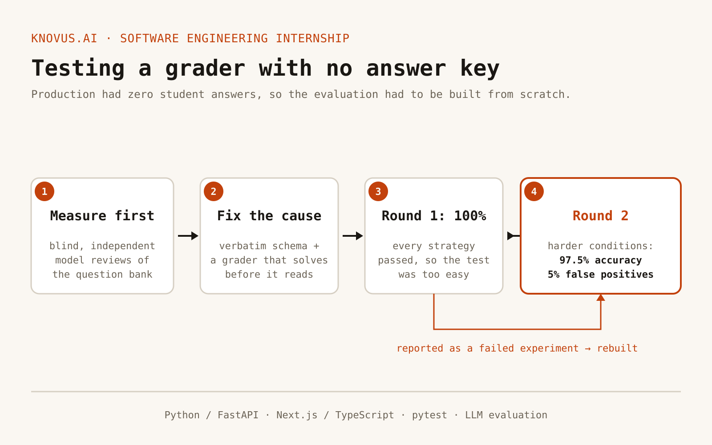

Sep 2026 – Present · Internship · FastAPI · Next.js · LLM evaluation
Knovus.ai — Fixing How an AI Grades
Knovus is an AI study platform. My first project was its practice questions: find out whether they were usable, fix what wasn’t, and prove the fix works.
- Measured before proposing anything: blind, independent model reviews of the question bank, which traced the problems to a schema assumption, not the model.
- Built the fix, now in review: a verbatim question schema and a grader that solves each problem itself before it reads the student’s answer, with 30 tests.
- The first evaluation scored a suspicious 100% on every strategy, so I reported it as a failed test and made the cases harder: 97.5% accuracy, 5% false positives.